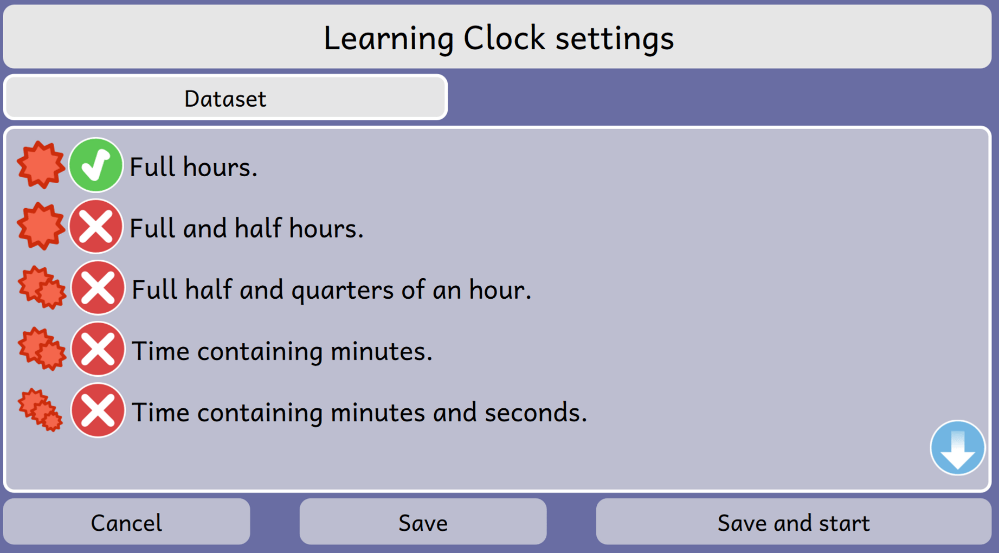
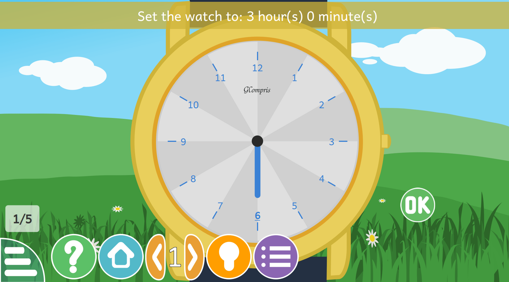
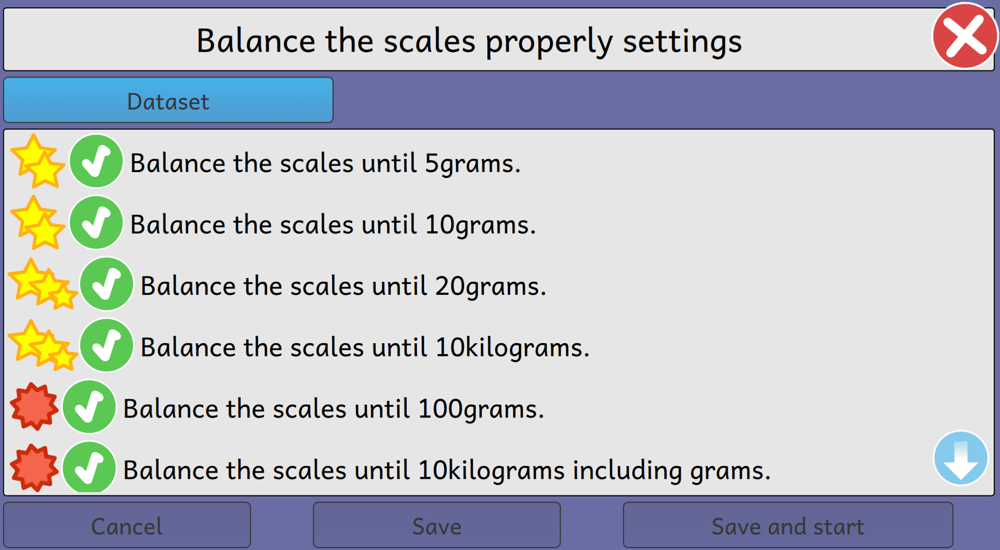

Finally, I am going to write about my experience as a student of Season of KDE 2020. A winter learning new things, learning what matters is not just writing code but writing good code. I would like to thank GCompris and KDE for giving me such an opportunity to be a part of the community and to try to bring happiness to people and kids using it around the world.
I had to complete the following tasks during this period:
- Improve multiple datasets of clock game activity.
- Add multiple datasets to balance scales.
- Add multiple datasets to balance scale with kgs.
- Add multiple datasets to balance scales with ounce.
Since few weeks are still left for SoK to come to an end. Till now, I have completed the following tasks:
- Implemented new multiple datasets to clock game activity which got merged to the multiple_dataset branch.
- Added multiple datasets to balance scales activity which is under review by the mentors.
- Added multiple datasets to balance scales with kgs activity which is under review by the mentors.
Clockgame Activity:
I started my work on this activity. The goal of this activity is to teach a child how to see the clock. Initially, this activity contains dataset only with two different level selections. I have added the multiple dataset to this
activity with 5 different level selections to better fit to the french school learning programs.

I have also added a OK button to check the answer. Finally, the datasets has been merged to multiple_dataset branch.

Balance scales activity:
This activity goal is to teach the child about the arithemetic calculation by balancing the scales of different weights. The balance scales activity has 3 sub activities as mentioned above:
- Adding multiple datasets to balance scales.
- Adding multiple datasets to balance scales with kgs.
- Adding multiple datasets to balance scales with ounce.
I have added multiple datasets to balance scales and balance scales with kgs which is under review by the mentors.

I am left with the following work which I would complete in the coming weeks.
- To add multiple datasets to balance scale with ounce.
- Test the activities on a different platforms.
I am thankful to my mentor Johnny Jazeix and Emmanuel Charruau for giving me this opportunity and helping me always
during the SoK period. I have learned a lot of things during this period and have a great learning experience as of development coding.
I am looking forward to add multiple datasets to other activities after the end of the SoK period.